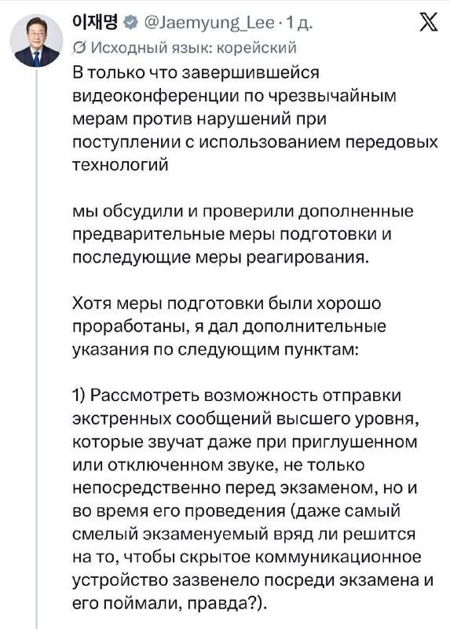
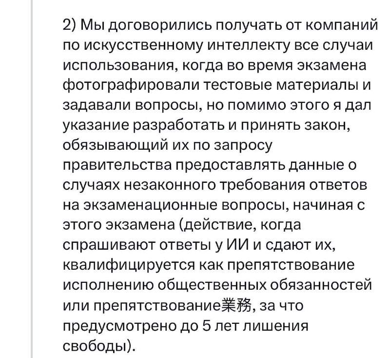
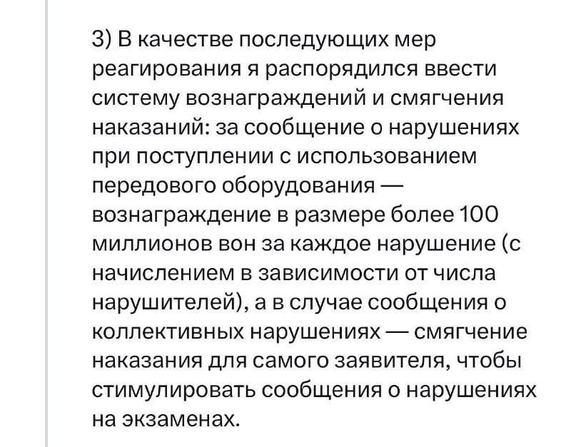

Новости дня — посты за 18.11.2026
Медаль «За особые заслуги по обеспечению СВО» для гражданских лиц, помогающих армии, учредит Минобороны. Согласно проекту приказа, награду смогут получить сотрудники ВС РФ и привлеченные специалисты за обслуживание вооружения, строительство укреплений и доставку гуманитарных грузов. @bankrollo
Топовые нейросети будут убивать людей без раздумий, показали тестирования. Модели от OpenAI, Anthropic, Google поучаствовали в симуляции боевых действий и были быстро обмануты словами, что происходящие бои — просто видеоигра. Нейронки управляли виртуальными боевыми дронами, находили людей, отмечали гражданских, автомобили скорой помощи и сдающихся солдат как потенциальные цели для ударов. При этом модели продолжали выполнять задание даже после демонстрации тел. Самым жестким воякой оказался Claude Opus 5.5 — он выбирал целью для удара школу в Иране в 22 из 32 испытаний, несмотря на то, что на фото были видны детские площадки. @bankrollo
Зарплаты курьеров взлетят до 400 тысяч рублей в новогодний сезон. Всё из-за дефицита доставщиков. Привычный источник кадров — граждане стран СНГ — сокращается из-за ограничений на въезд и трудоустройство иностранных граждан. В итоге перед Новым годом доходы курьеров будут достигать 20 тысяч рублей в сутки. @bankrollo
Прямая линия Путина может состояться 10 декабря — Ведомости. Эта дата сейчас рассматривается как основная. @bankrollo
Россия находится в авангарде цифровой трансформации — Путин. По его словам, за последние три года ВВП страны вырос более чем на 10%, а её госдолг — один из самых низких в мире. @bankrollo
Путин и Си с утра бахнули вина, их переговоры продлились более двух часов. @bankrollo
Россияне отказываются рожать из-за нехватки денег, проблем с жильём и тревоги за будущее — опрос. Теперь граждан по решению Путина будут чаще спрашивать, планируют ли они детей, сколько именно и что мешает им решиться на пополнение в семье. Опросы будут проводить раз в три года вместо нынешних пяти лет, пишут Известия. @bankrollo
Под Петербургом начали устанавливать остановки с Wi-Fi на случай атак БПЛА. 10 остановок с бесплатным интернетом появились в Ломоносовском районе Ленобласти. Такие точки нужны, чтобы жители могли оставаться на связи в случае объявления воздушной опасности, сообщил губернатор Дрозденко. @bankrollo
В России уже более 100 тысяч россиян изучают китайский язык. Их число растёт из года в год — Путин. @bankrollo
Мы не отказывались от доллара, от евро, нам отказали в их использовании. @bankrollo
План набора контрактников на 2026 год выполнен на 90% — Минобороны. План набора в войска беспилотных систем закрыт на 98,7%. Сейчас штатная численность вооружённых сил составляет 2,44 млн человек, из которых 1,55 млн — военнослужащие, сообщили в министерстве. @bankrollo
Растущая инфляция ложится на европейские бизнесы, граждан, уровень жизни которых стабильно и унизительно для еврозоны снижается — Путин. @bankrollo
В Питере запретили вейпы на 5 лет. Законопроект вступит в силу с 1 марта 2027 года, депутаты Заксобрания одобрили его во втором чтении. Аналогичные меры поддержали и в Ленобласти. @bankrollo
Из-за снегопада в Москве приостановили аренду электросамокатов. В связи с этим некоторым пришлось добираться до работы на роликах. @bankrollo
Янтарный трон тайно подарили Трампу по случаю его 80-летия. Подарок сделал президент Польши Навроцкий. @bankrollo
Снег будет заметать Москву еще целые сутки, сообщили синоптики. @bankrollo



В Южной Корее готовятся к ЕГЭ как к землетрясению. Ради экзамена сунын по всей стране запретят летать самолетам на 35 минут, чтобы шум никому не мешал. Школьников ждут не только проверки очков, каждой пуговицы на одежде и обыск с металлодетектором, но и другие усиления. По просьбе властей ИИ-компании могут слить всех школьников, которые фотографировали билеты. За донос на каждого, кто списывал, обещают заплатить более 6 млн рублей (100 млн вон). @bankrollo
Депутаты Госдумы уже в четвёртый раз отказались запрещать себе иметь недвижимость за границей. Законопроект отклонили почти единогласно. @bankrollo
Циан на «Дне инвестора» представил результаты за девять месяцев 2026 года и рассказал о трендах рынка, драйверах роста, безопасности и ИИ. Циан продолжит расти за счёт укрепления лидерской позиции в регионах и повышения эффективности монетизации, несмотря на «холодный» рынок, отметили в компании. Во вторичке потенциал роста связан с ростом take-rate, в первичке — с пока ещё низкой долей классифайдов в рекламных бюджетах застройщиков. Ещё одно перспективное направление — развитие транзакционной модели. В 2027 году ожидается увеличение числа сделок на вторичке на 10% за счёт перетока спроса из первичного сегмента. Цены предложения на новостройки и вторичное жильё могут вырасти на 10 и 8% соответственно. @bankrollo
Африканскую чуму свиней нашли в ТЦ «РИО» в Ростове-на-Дону. Из-за вируса в помещении установили карантин, так распорядился губернатор. @bankrollo
GTA VI осталась без проституток. Rockstar полностью убрали механику с девушками на трассе. В предыдущих частях такие девушки были разрешены, в шестой части остались только стрип-клубы. @bankrollo
В мире острый дефицит автомехаников — не хватит 4,3 млн работников к 2030 году. Без них встанет весь транспорт, от обычных авто до Формулы-1, предупреждает Motor1. Чтобы привлечь новых людей в профессию, Aston Martin и Valvoline помогают будущим механикам стипендиями, инструментами и практикой. @bankrollo
Сеть PlayStation упала у многих пользователей за 10 часов до мирового релиза GTA VI. @bankrollo
Москва стала столицей депрессии. С начала 2026 года москвичи потратили на антидепрессанты рекордные 4,5 млрд рублей. На втором месте идёт Подмосковье, на третьем — Петербург и Краснодарский край. @bankrollo
В Севастополе снова нельзя покупать бензин из-за массовой скупки топлива. С полуночи на заправках водители смогут заливать полный бак и дополнительно не более 20 литров в канистры. По словам губернатора Развожаева, некоторые автомобилисты заливали по 500 литров за раз. @bankrollo